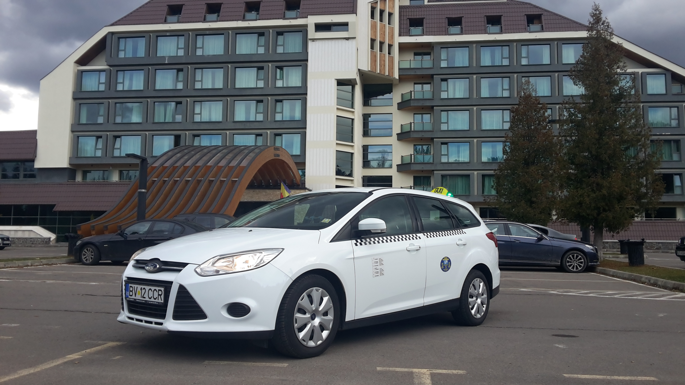

CONTACT
Taxi PREDEAL
+4 0799 419 517
contact@taxipredeal.com
.jpg)

.jpg)
PRELUCRAREA DATELOR CU CARACTER PERSONAL
PRINCIPIILE
(1) Datele cu caracter personal de catre TAXI PREDEAL RAVEN TAXI sunt:
(a) prelucrate in mod legal, echitabil si transparent fata de persoana vizata („legalitate, echitate si transparenta”);
(b) colectate in scopuri determinate, explicite si legitime si nu sunt prelucrate ulterior intr-un mod incompatibil cu aceste scopuri; prelucrarea ulterioara in scopuri de arhivare in interes public, in scopuri de cercetare stiintifica sau istorica ori in scopuri statistice nu este considerata incompatibila cu scopurile initiale, in conformitate cu articolul 89 alineatul (1) („limitari legate de scop”);
(c) adecvate, relevante si limitate la ceea ce este necesar in raport cu scopurile in care sunt prelucrate („reducerea la minimum a datelor”);
(d) exacte si, in cazul in care este necesar, sa fie actualizate; trebuie sa se ia toate masurile necesare pentru a se asigura ca datele cu caracter personal care sunt inexacte, avand in vedere scopurile pentru care sunt prelucrate, sunt sterse sau rectificate fara intarziere („exactitate”);
(e) pastrate intr-o forma care permite identificarea persoanelor vizate pe o perioada care nu depaseste perioada necesara indeplinirii scopurilor in care sunt prelucrate datele; datele cu caracter personal pot fi stocate pe perioade mai lungi in masura in care acestea vor fi prelucrate exclusiv in scopuri de arhivare in interes public, in scopuri de cercetare stiintifica sau istorica ori in scopuri statistice, in conformitate cu articolul 89 alineatul (1), sub rezerva punerii in aplicare a masurilor de ordin tehnic si organizatoric adecvate prevazute in prezentul regulament in vederea garantarii drepturilor si libertatilor persoanei vizate („limitari legate de stocare”);
(f) prelucrate intr-un mod care asigura securitatea adecvata a datelor cu caracter personal, inclusiv protectia impotriva prelucrarii neautorizate sau ilegale si impotriva pierderii, a distrugerii sau a deteriorarii accidentale, prin luarea de masuri tehnice sau organizatorice corespunzatoare („integritate si confidentialitate”).
(2) Operatorul este responsabil de respectarea alineatului (1) si poate demonstra aceasta respectare („responsabilitate”).
LEGALITATEA PRELUCRARII de catre TAXI PREDEAL RAVEN TAXI
(1) Prelucrarea este legala numai daca si in masura in care se aplica cel putin una dintre urmatoarele conditii:
(a) persoana vizata si-a dat consimtamantul pentru prelucrarea datelor sale cu caracter personal pentru unul sau mai multe scopuri specifice;
(b) prelucrarea este necesara pentru executarea unui contract la care persoana vizata este parte sau pentru a face demersuri la cererea persoanei vizate inainte de incheierea unui contract;
(c) prelucrarea este necesara in vederea indeplinirii unei obligatii legale care ii revine operatorului;
(d) prelucrarea este necesara pentru a proteja interesele vitale ale persoanei vizate sau ale altei persoane fizice;
(e) prelucrarea este necesara pentru indeplinirea unei sarcini care serveste unui interes public sau care rezulta din exercitarea autoritatii publice cu care este investit operatorul;
(f) prelucrarea este necesara in scopul intereselor legitime urmarite de operator sau de o parte terta, cu exceptia cazului in care prevaleaza interesele sau drepturile si libertatile fundamentale ale persoanei vizate, care necesita protejarea datelor cu caracter personal, in special atunci cand persoana vizata este un copil.
Litera (f) din primul paragraf nu se aplica in cazul prelucrarii efectuate de autoritati publice in indeplinirea atributiilor lor.
(2) Statele membre pot mentine sau introduce dispozitii mai specifice de adaptare a aplicarii normelor prezentului regulament in ceea ce priveste prelucrarea in vederea respectarii alineatului (1) literele (c) si (e) prin definirea unor cerinte specifice mai precise cu privire la prelucrare si a altor masuri de asigurare a unei prelucrari legale si echitabile, inclusiv pentru alte situatii concrete de prelucrare, astfel cum este prevazut in capitolul IX.
(3) Temeiul pentru prelucrarea mentionata la alineatul (1) literele (c) si (e) trebuie sa fie prevazut in:
(a) dreptul Uniunii; sau
(b) dreptul intern care se aplica operatorului.
Scopul prelucrarii este stabilit pe baza respectivului temei juridic sau, in ceea ce priveste prelucrarea mentionata la alineatul (1) litera (e), este necesar pentru indeplinirea unei sarcini efectuate in interes public sau in cadrul exercitarii unei functii publice atribuite operatorului. Respectivul temei juridic poate contine dispozitii specifice privind adaptarea aplicarii normelor prezentului regulament, printre altele: conditiile generale care reglementeaza legalitatea prelucrarii de catre operator; tipurile de date care fac obiectul prelucrarii; persoanele vizate; entitatile carora le pot fi divulgate datele si scopul pentru care respectivele date cu caracter personal pot fi divulgate; limitarile legate de scop; perioadele de stocare; si operatiunile si procedurile de prelucrare, inclusiv masurile de asigurare a unei prelucrari legale si echitabile cum sunt cele pentru alte situatii concrete de prelucrare astfel cum sunt prevazute in capitolul IX. Dreptul Uniunii sau dreptul intern urmareste un obiectiv de interes public si este proportional cu obiectivul legitim urmarit.
(4) In cazul in care prelucrarea in alt scop decat cel pentru care datele cu caracter personal au fost colectate nu se bazeaza pe consimtamantul persoanei vizate sau pe dreptul Uniunii sau dreptul intern, care constituie o masura necesara si proportionala intr-o societate democratica pentru a proteja obiectivele mentionate la articolul 23 alineatul (1), operatorul, pentru a stabili daca prelucrarea in alt scop este compatibila cu scopul pentru care datele cu caracter personal au fost colectate initial, ia in considerare, printre altele:
(a) orice legatura dintre scopurile in care datele cu caracter personal au fost colectate si scopurile prelucrarii ulterioare preconizate;
(b) contextul in care datele cu caracter personal au fost colectate, in special in ceea ce priveste relatia dintre persoanele vizate si operator;
(c) natura datelor cu caracter personal, in special in cazul prelucrarii unor categorii speciale de date cu caracter personal, in conformitate cu articolul 9, sau in cazul in care sunt prelucrate date cu caracter personal referitoare la condamnari penale si infractiuni, in conformitate cu articolul 10;
(d) posibilele consecinte asupra persoanelor vizate ale prelucrarii ulterioare preconizate;
(e) existenta unor garantii adecvate, care pot include criptarea sau pseudonimizarea.
CONDITII PRIVIND CONSIMTAMANTUL
(1) In cazul in care prelucrarea se bazeaza pe consimtamant, operatorul trebuie sa fie in masura sa demonstreze ca persoana vizata si-a dat consimtamantul pentru prelucrarea datelor sale cu caracter personal.
(2 In cazul in care consimtamantul persoanei vizate este dat in contextul unei declaratii scrise care se refera si la alte aspecte, cererea privind consimtamantul trebuie sa fie prezentata intr-o forma care o diferentiaza in mod clar de celelalte aspecte, intr-o forma inteligibila si usor accesibila, utilizand un limbaj clar si simplu. Nicio parte a respectivei declaratii care constituie o incalcare a prezentului regulament nu este obligatorie.
(3) Persoana vizata are dreptul sa isi retraga in orice moment consimtamantul. Retragerea consimtamantului nu afecteaza legalitatea prelucrarii efectuate pe baza consimtamantului inainte de retragerea acestuia. Inainte de acordarea consimtamantului, persoana vizata este informata cu privire la acest lucru. Retragerea consimtamantului se face la fel de simplu ca acordarea acestuia.
(4) Atunci cand se evalueaza daca consimtamantul este dat in mod liber, se tine seama cat mai mult de faptul ca, printre altele, executarea unui contract, inclusiv prestarea unui serviciu, este conditionata sau nu de consimtamantul cu privire la prelucrarea datelor cu caracter personal care nu este necesara pentru executarea acestui contract.
CONTACT
Taxi PREDEAL
+4 0799 419 517
contact@taxipredeal.com
Tags: Taxi Predeal, comanda taxi, comenzi taxi, Taxiuri in Predeal, Taxi Predeal Raven Taxi, Predeal, Snow, Trei Brazi, hotel, hoteluri, pensiuni, pensiune, Schi, Ski, Sky, Zapada, Brasov, companii taxi Predeal, dispecerat taxi Predeal, Taxi Predeal nonstop, taxi Predeal non stop, transfer aeroport, transport Predeal Bucuresti, transport Predeal Brasov, taxi Predeal Brasov, tarife taxi Predeal, taxi, centrul de informare Predeal, informatii Predeal, Primaria Predeal, tarif taxi Predeal, taxi Predeal dispecerat, preturi, preturi taxi Predeal, taxi Predeal, taxi Predeal, taxi Predeal, uber Predeal, bolt Predeal. Taximetristi in Predeal, Taxi predeal Tony, Taxi predeal Teodorescu, taxi Predeal Corina, taxi predeal haidau, taxi predeal relu